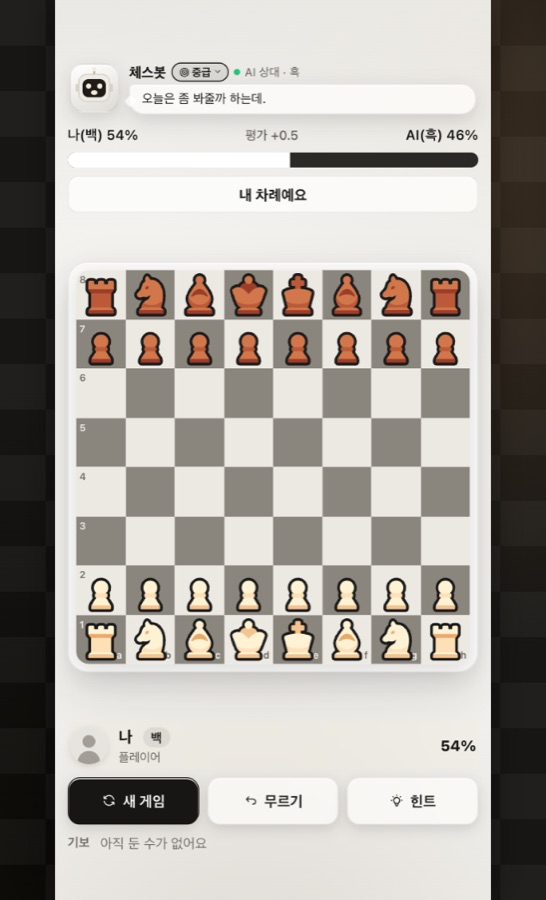

모바일 게임 · 출시·운영 중
체스코치
토스 앱 안에서 바로 두는 체스. 앱인토스와 원스토어에 출시해 운영하고 있습니다.

- 문제
- 체스를 처음 배우는 사람이 부담 없이 AI와 둘 곳이 마땅치 않았습니다.
- 해결
- Stockfish 엔진을 웹 워커로 돌려 난이도별 AI, 형세 막대, 힌트·무르기를 만들고, 같은 코드를 안드로이드로 감싸 원스토어에도 올렸습니다. 게임물 등급분류(GRAC)부터 스토어 심사까지 직접 진행했습니다.
- 어려웠던 점
- 토스 웹뷰마다 화면 높이가 달라 체스판이 잘리는 문제가 반복됐습니다. 스크린샷 눈대중 대신
getBoundingClientRect로 실측해 보드 크기를 빈 공간에 맞춰 계산하도록 바꿨고, 빌드 산출물(.ait) 안의 CSS를 직접 열어 반영 여부를 확인하는 습관을 만들었습니다.